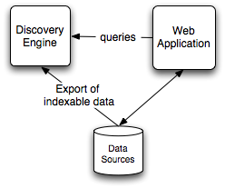

The Discovery Search Engine is an enterprise relevancy ranking system delivered through web services and offering you fresh insight into your structured data or free text. It gives you more useful answers to such basic questions as:
With faceted classification, any indexed item can have an arbitrary number of different classifications applied to it. Each classification can come from a different classification system.
By applying multiple classifications to items, the dataset of items can be organized and analyzed across numerous different dimensions.
Classification values themselves might be organized in a useful structure (e.g. a hierarchical tree structure, or an ordered structure).
Some brief examples to illustrate these very abstract concepts
A portion of a hierarchical tree of cuisine types:
An ordered list of price ranges:
- Very Expensive
- Expensive
- Moderate
- Inexpensive
- Cheap
“Don Carlo’s Restaurant” might be tagged as both Tuscan and Inexpensive.
The Discovery Search Engine makes full use of facets. When you search for an Italian restaurant, Don Carlo’s will be returned because a Tuscan restaurant is inherently an Italian restaurant. In other words, there is no need for Don Carlo’s to be tagged as both Italian and Tuscan, since the structure of the taxonomy tells the engine that Tuscan implies Italian.
The Discovery Search Engine can tell you how many items in the data set match you query that fall within each facet value all in a single query. This can be useful in helping a user to quickly drill-down on the data for what she ultimately finds most interesting.
For a more technical discussion of faceted classification, see http://en.wikipedia.org/wiki/Faceted_classification
Fuzzy matching is the ability of the Discovery Search Engine to show your users items that are not exact matches to the search, but are close matches.
To extend the example above, if you search for an Inexpensive Piedmont restaurant, Don Carlo’s would be returned as a fuzzy (non-exact) match, as it is related to what you’re looking for. Similarly, cheap Italian restaurants would also be returned. Results are returned in order of relevancy.
For a more technical discussion of fuzzy matching, see http://en.wikipedia.org/wiki/Fuzzy_set_theory
Items can all be tagged with their geographic location(s). Searches can specify that they are looking for items within an arbitrary number of miles of a specific location, or they can search for items within an arbitrary boundary, such as points, line strings and polygons. As with all Discovery searches, close matches are also available in the results ordered by decreasing relevance.
The engine provides a fine granulariy in determining relevance of matches by calculations from the target location. Customers that want a more relaxed approach to scoring by distance can determine those rules using the isoRelevanceDistance feature.
Extending our example, a user might look for Italian restaurants near her current location or within a particular neighborhood.
You can use the full power of combining free-text searching with the other advanced capabilities of the Discovery Search Engine. For example, you might search for Inexpensive Italian restaurants where the reviews contain the phrase, “ragout.” As of version 2.8.2, the engine also supports proximity matching. Version 2.8.3 support text highlighting and phonetic text analysis such as Soundex, Refined Soundex, Metaphone and Double Metahone.
As of version 2.9, free text searches support automatic spell correction of user queries and support for Did You Mean? query suggestions based upon comparing a user’s query with what words are included in the full text index.
The Discovery Search Engine is designed to scale to handle extremely large datasets. You can deploy the cluster on your own hardware or on a cloud-based system such as Amazon’s EC2. Text search resources can be deployed in-memory or on disk.
The Discovery Search Engine is incredibly fast. Queries typically take less than 50 milliseconds. As a result, the Discovery Search Engine is well suited to power highly interactive applications with near instantaneous updates. This enables users to quickly and effectively drill-down and explore their search results to find useful items.
The engine has three main integration points. Additionally a simple web based administration and query interface is available.
The following diagram illustrates, at a high level, where the Discovery Search Engine would fit into your architecture.

The engine has a built-in web interface that exposes information about its current state, the data and indexes that it holds, and allows for testing of queries.
To get your data into the engine you push an XML document that contains a de-normalized view of your items. In other words, each item is seen as a set of keys with associated values.
The same XML format is used for the initial data import and subsequent incremental updates.
For a detailed discussion of this topic, see the Changesets chapter.
One of the key features of the Discovery Search Engine is that your indexes are defined independently from your data. They can be defined before or after your data is imported, and can be modified without touching your data. By defining your indexes (also known as Dimensions) you create the structure necessary to perform queries. Again, this process is incremental – you can add, remove, or change the indexes at any time.
For a detailed discussion of this topic, see the Overview chapter.
The engine allows querying via XML-RPC and JSON and returns a paginated list of result ids. It will return the original data associated with the records using a configurable LRU cache. You retrieve records from your database using the ids from the Discovery Search Engine response.
For a detailed discussion of this topic, see the Overview chapter.
The engine supports a variety of features that relate to international support. Most of these features are enabled by way of a Locale.
If no locale has been specified, it defaults to Language: English, Country: United States.
If you want to specify a different locale, the place to do it is the Dimensions.xml document. To specify a locale that applies to all dimensions, add the locale attribute to the Dimensions tag.
To specify a locale for a single dimension, add the locale attribute to the appropriate Dimension tag.
The locale can also specify a variant but this option will have negligible impact on the engine. The variant argument is a vendor or browser-specific code. For example, use WIN for Windows, MAC for Macintosh, and POSIX for POSIX. Where there are two variants, separate them with an underscore, and put the most important one first.
The Language for a locale is a valid ISO Language Code. These codes are the lower-case, two-letter codes as defined by ISO-639. You can find a full list of these codes at a number of sites, such as:
The Country for a locale is a valid ISO Country Code. These codes are the upper-case, two-letter codes as defined by ISO-3166. You can find a full list of these codes at a number of sites, such as:
For more information on specifying a locale, refer to Overview.
The current list of supported languages is
When a dimension specifies ignoreCase the locale in effect will be used to correctly convert all text to lowercase so that case-insensitive comparisons are enabled.
The ignoreCase feature corrects deal with special cases for Turkish and Greek, as long as those locales are in effect, e.g. “tr_TR” or “el_GR”.
The choice of stemmer will depend on the supported locale language in effect.
The default time dimension format is determined by the locale country in effect.
There are two exceptions to how a Locale is automatically applied. They are listed here.
The engine uses a locale-independent method of normalizing accented characters to their non-accented form, so it does not rely on any locale in effect.
Location searches do not rely on a locale. Currently the engine only supports distance measurements in Miles and Kilometers.
Unless otherwise specified, the engine defaults to miles when referring to distances. To work with kilometers, set the distanceUnit field on the geoloc query criterion or sortBy criterion. To set the default distance unit to kilometers, set the distanceUnit attribute of the dimensions element in the dimensions.xml file.
New in version 2.8.4.